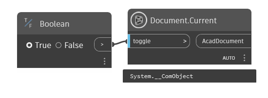
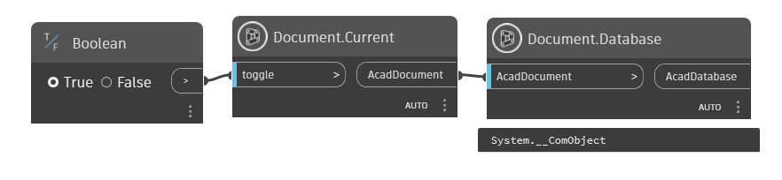
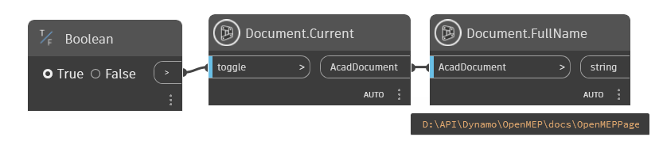
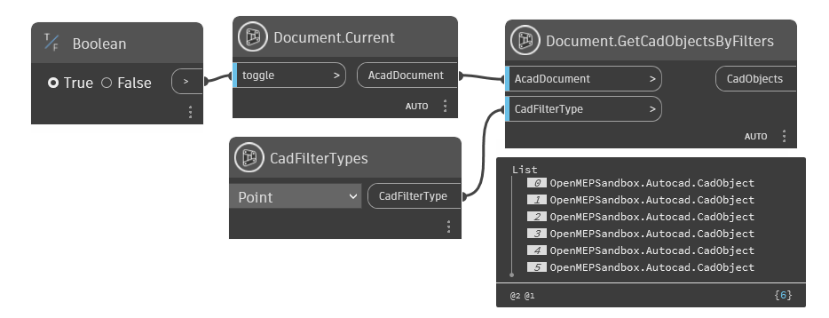
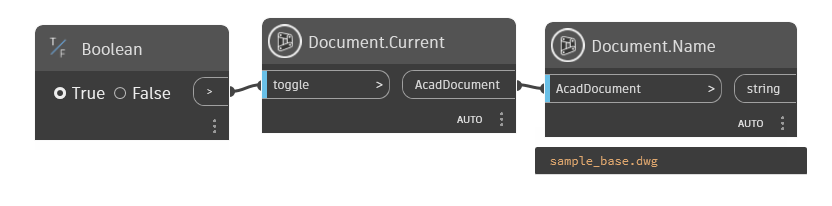

Class Document
- Namespace
- OpenMEPCad.Autocad
- Assembly
- OpenMEPCad.dll
The AcadDocument object associated with the object.
public class Document- Inheritance
-
Document
- Inherited Members
Methods
Current(bool)
Get Current Document Of Autocad Application
public static dynamic? Current(bool toggle)Parameters
togglebool
Returns
- dynamic
AcadDocument
Examples

Document.Current.dynDatabase(dynamic)
Database of Document
public static dynamic Database(dynamic AcadDocument)Parameters
AcadDocumentdynamicAcadDocument
Returns
- dynamic
The Database object contains all of the graphical and most of the non-graphical AutoCAD objects.
Examples

Document.Database.dynFullName(dynamic)
FullName of Document
public static string FullName(dynamic AcadDocument)Parameters
AcadDocumentdynamic
Returns
Examples

Document.FullName.dynGetCadObjectsByFilters(dynamic, int)
Get All Object in CadDocument By Filter Object Type
public static List<dynamic> GetCadObjectsByFilters(dynamic AcadDocument, int CadFilterType)Parameters
AcadDocumentdynamicAcadDocument
CadFilterTypeintFilter Type of Cad Object
Returns
Examples

Document.GetCadObjectsByFilters.dynName(dynamic)
Name of Document
public static string Name(dynamic AcadDocument)Parameters
AcadDocumentdynamicAcadDocument
Returns
Examples

Document.Name.dyn